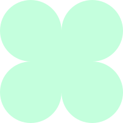

Lucie
Freihaut
Développeuse fullstack junior
L
F
Développeuse fullstack junior

Rémoise de naissance et Ardennaise de cœur, me voilà Troyenne dans les études supérieures. D'abord à l'Université de Technologie de Troyes (UTT) en prépa intégrée et à présent, réorientée et épanouie à l'IUT de Troyes, je suis en 2e année de Bachelor Universitaire de Technologie Métiers du Multimédia et de l'Internet (BUT MMI) dans le parcours développement web et dispositifs interactifs. En 2024, j'ai décroché une alternance de 2 ans chez Piscines Magiline à Troyes en tant que apprentie développeuse web fullstack. Je travaille actuellement sur la refonte d'iMAGI, leur 1er site de domotique. C'est un grand challenge !

Malgré ma timidité, je suis animée par une joie de vivre et une curiosité qui me poussent à explorer notre monde. Je m'émerveille des moments simples de la vie : un oiseau à la fenêtre, le soleil qui réchauffe, le hasard des rencontres…
Que ce soit dans le sport, la musique ou les études, j'ai toujours donné le meilleur de moi-même. C'est comme ça que j'aime vivre. Je n'attends pas que l'orage passe, je danse sous la pluie.
Je souhaite découvrir et approfondir de nombreux domaines comme la photographie, le design, la musique et le jeu vidéo.
Malgré ma timidité, je suis animée par une joie de vivre et une curiosité qui me poussent à explorer notre monde. Je m'émerveille des moments simples de la vie : un oiseau à la fenêtre, le soleil qui réchauffe, le hasard des rencontres…
Que ce soit dans le sport, la musique ou les études, j'ai toujours donné le meilleur de moi-même. C'est comme ça que j'aime vivre. Je n'attends pas que l'orage passe, je danse sous la pluie.
Je souhaite découvrir et approfondir de nombreux domaines comme la photographie, le design, la musique et le jeu vidéo.
